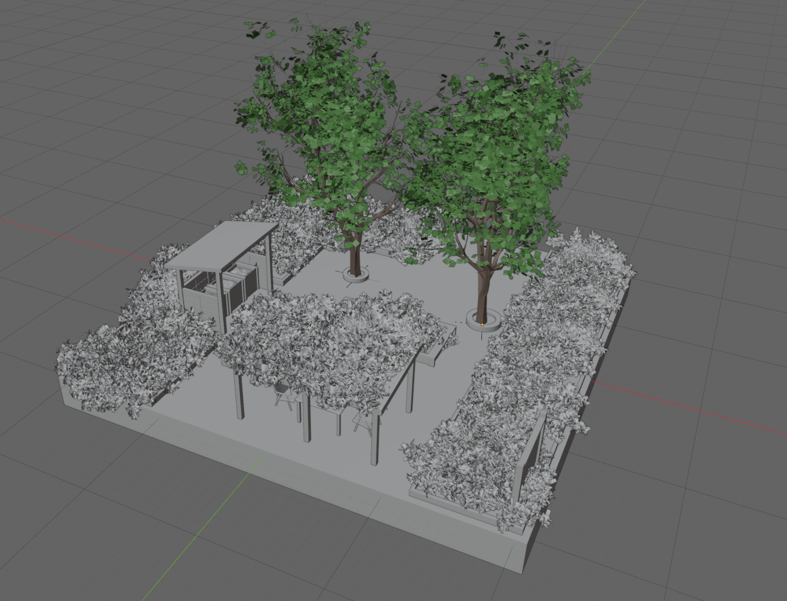
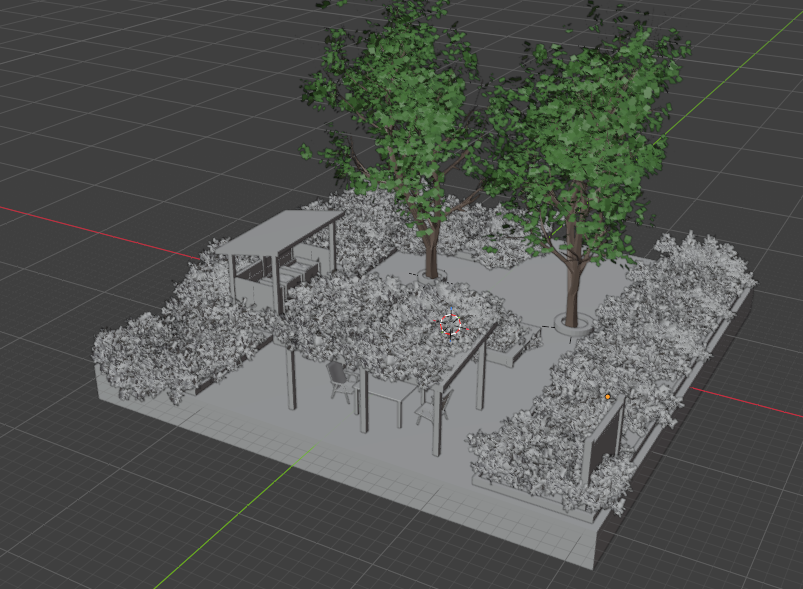

Week 8 Blog – Refining Design Framing & Third-Cycle Experimentation
The Experience
The focus this week is on refining the project framework and preparing for the second major critique session. The class is no longer merely encouraging us to continue broad experimentation; instead, it is asking us to revisit our reverse briefs and analyze the logic behind our project directions more carefully.
The Week 8 lecture repeatedly emphasised that the project framing itself shapes the final outcome. It asked us to reconsider:
- what we are focusing on
- what we are deliberately excluding
- what assumptions we are making
- how we would defend the logic of the project
At the same time, I continued developing the Eco Hub prototype in Blender. Compared with Week 7, this stage focused less on rough layout testing and more on refining atmosphere, structure, and ecological integration.
I developed the prototype through several stages:
- adding vegetation density
- refining circulation paths
- improving the relationship between seating and planting
- introducing larger trees and environmental boundaries
- improving overall spatial atmosphere through rendering

The final rendered version this week felt much more immersive and realistic compared to the earlier structural models.

However, the more visually resolved the project became, the more I began questioning whether the visual atmosphere itself was becoming stronger than the actual participation logic and this became one of the most important reflections of the week.
Reflection on Action
This week made me realise that project refinement is not simply about making the work look better. At first, I felt very satisfied when the rendered version started looking more complete and atmospheric. Adding vegetation, trees, material textures, and environmental depth immediately made the Eco Hub feel more believable.
However, this also created a new problem. As the visual quality improved, I noticed that I was spending more time refining atmosphere and less time questioning whether the project was actually testing participation successfully.
This reflection connected strongly to the Week 8 lecture, which repeatedly reminded us that experiments should help refine the logic of the project rather than simply polishing presentation.
The reverse brief exercises also made me question several assumptions:
- Am I assuming that ecological atmosphere automatically creates participation?
- Am I prioritising visual immersion over behavioural testing?
- Am I still focusing too broadly on “Eco Hub” instead of one clear interaction?
This week therefore became less about generating new ideas and more about critically narrowing the project.
I’ve also noticed that projects are actually at their strongest when the interaction remains simple and easy to understand. Once too many systems, meanings, or contextual elements are introduced, projects can easily become visually rich but conceptually unclear.
Theory
Week 8 strongly focused on the relationship between reverse brief, framing, and experimentation. The lecture explained that project framing shapes:
- how we understand the problem
- how we define success
- how the final design develops
One of the most important ideas this week was:
This helped me understand that experimentation is not a straight path toward a final outcome, but an ongoing cycle of adjustment and reframing.
The lecture also encouraged us to move from broad concepts into clearer experiment questions:
- I need to test whether...
- I need to find out how...
- I need to compare...
This directly influenced my project.
Instead of asking, “How can I design an Eco Hub?" I started asking, "How can spatial intervention encourage visible participation?” This shift made the project feel much more focused and testable.
Preparation
This week helped me realise that the next stage of the project needs to focus more specifically on interaction and measurable participation rather than environmental atmosphere alone.
For Crit Session 2, I want the project to communicate:
- clearer interaction logic
- stronger realism
- more understandable participation
- more focused testing goals
The next experiment cycle will therefore focus on:
- participation behaviour
- user interpretation
- realistic scale
- environmental usability
- business interaction points
I also plan to incorporate more measurable testing methods, such as asking users:
- what they think the space is for
- which areas feel interactive
- where they would spend time
- whether they understand the environmental purpose of the intervention
The biggest lesson this week was understanding that refinement is not about adding more details — it is about making the core idea clearer.